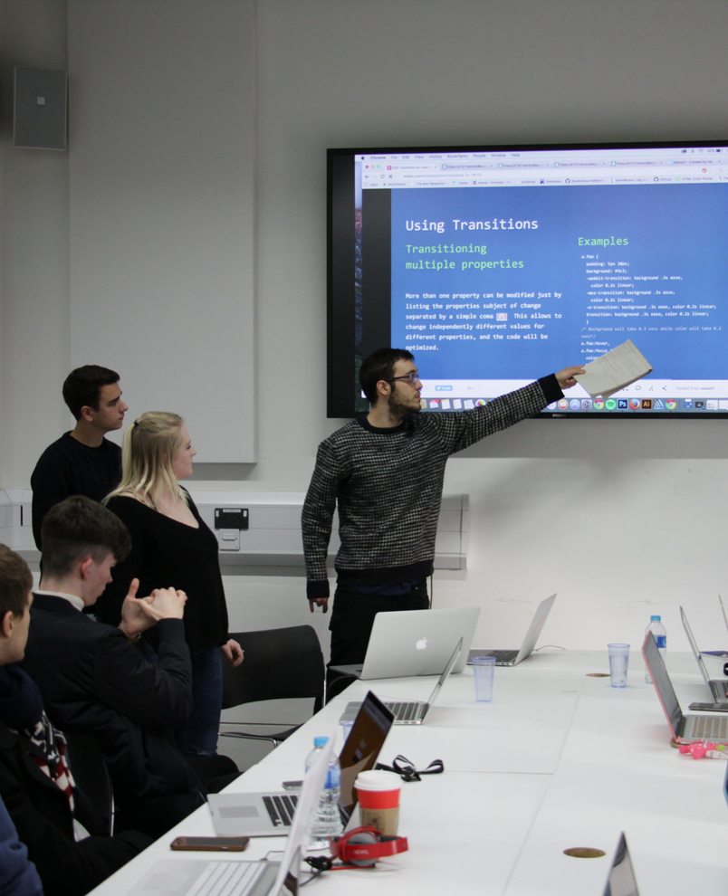

Your Web Media journey
starts here.


Web Media Production will allow you to develop a range of skills from producing content for the web to coding using HTML, CSS and Javascript. As well as that, you will look into video and image editing, social media management, web design and much more. This course offers both practical skills and a theoretical insight into the web industry, you will learn how to turn an idea into a functioning web product.
You'll have two main costs to meet: tuition fees and living expenses. Here is some information to help you stay up-to-date on fees and the finance available.
Tuition fees and the range of financial support available are different for home, European Union or international learners - if you're not sure where you fit in, visit the UKCISA website for more information.
We know studying can be expensive and students sometimes find themselves in unexpected hardship, so we have a range of financial support packages designed to help learners who are struggling with money.
£9,000 per year
£27,000 for the full 3 year course.
You may have to give details of your household income. EU students can’t apply for Maintenance Loans. The loan is paid directly into your bank account at the start of term. You have to pay the loan back.
| Full-time student | Loan available for the 2016 to 2017 academic year |
| Living at home | Up to £6,904 |
| Living away from home, outside London | Up to £8,200 |
| Living away from home, in London | Up to £10,702 |
| You spend a year of a UK course studying abroad | Up to £9,391 |
Find out more information on the GOV.UK student finance page.
Apply OnlineMoving to a big city can feel daunting. But we're here to help.
London is an exciting and creative city to live and study. We work with a number of competitive accommodation providers to offer students a home whilst at Ravensbourne.
Ravensbourne refer students to a variety of accommodation providers including host families, studios and cluster flats as well as Scape Living, who we’ve partnered with to provide brand new stylish accommodation a short walk away from the campus.
Browse through some of the projects that students have worked on while on the Web Media course at Ravensbourne.
Critical Annihilation is a Twin-Stick SHMUP (Shoot-em Up) made entirely out of tiny voxels. We take advantage of voxel technology to hype up the explosive gameplay. Everything is destructible to its core. Check it out at: Steam Store

Travel through a dreamlike forest, unravelling it’s secrets along the way. On this blissful journey you will encounter numerous challenges. In this ever changing forest each play through is a unique adventure. Check it out at: Apple Store
Below you will find all the information you need to be able to get in touch with us with any questions and thoughts and also find travel options to visit us in person.
We are a two-minute walk from the North Greenwich Pier stop on the Thames Clipper route. Please visit the Thames Clipper website for routes, fares and journey times.
Just one stop via the Jubilee line from Canary Wharf or Canning Town.
Charlton mainline station is just a short ride on either a 486, 472 or 161 bus from North Greenwich Underground station. All these buses start their route from North Greenwich underground so there is no confusion as to which way to go! Southeastern runs services to Charlton train station. Turn left out of the station and catch 486, 472 or N472 buses to North Greenwich.
The current network takes the Eurostar into St. Pancras, from where you only need to jump on the Northern Line down to London Bridge where you can then change for the Jubilee Line. Please observe local parking restrictions and note that we are unable to offer on-site parking facilities.
Below you will find information that you would need to know as a student at Ravensbourne. This information is here to help you understanding the resources available to you and how you can use them.